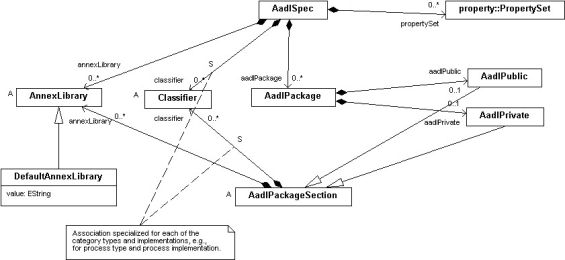

Previous
Next
Previous
Next 
| 4.15 AADL Packages |
AADL packages are represented by the concrete AadlPackage class,
which is a NamedElement
subclass. This class is the root class for AADL packages stored as separate XML documents.
Figure 32 shows the containment associations for AADL specifications and packages.

Figure 32 AADL Specifications and Packages
AADL packages contain at most one public and one private
package section. These sections are
represented by an AadlPublic and an AadlPrivate class, which are concrete subclasses of
the
AadlPackageSection class.
The AadlPackageSection class is defined as a subclass
of the PropertyHolder class to represent
the fact that public and private package sections can contain a Properties subclause.
The AadlPackageSection class is shown to contain
zero or more of Classifier and AnnexLibrary.
The Classifier containment association is specialized to the concrete classifier class using
its
name as the association label. This results in XML element tags for component classifiers that
identify the category component type or implementation. An ordering relationship is maintained
across these subclasses to represent a user-specified declaration order (see also Annex C.4.6).
The ordered set of classifiers is returned by the method implementing the classifier containment
association.